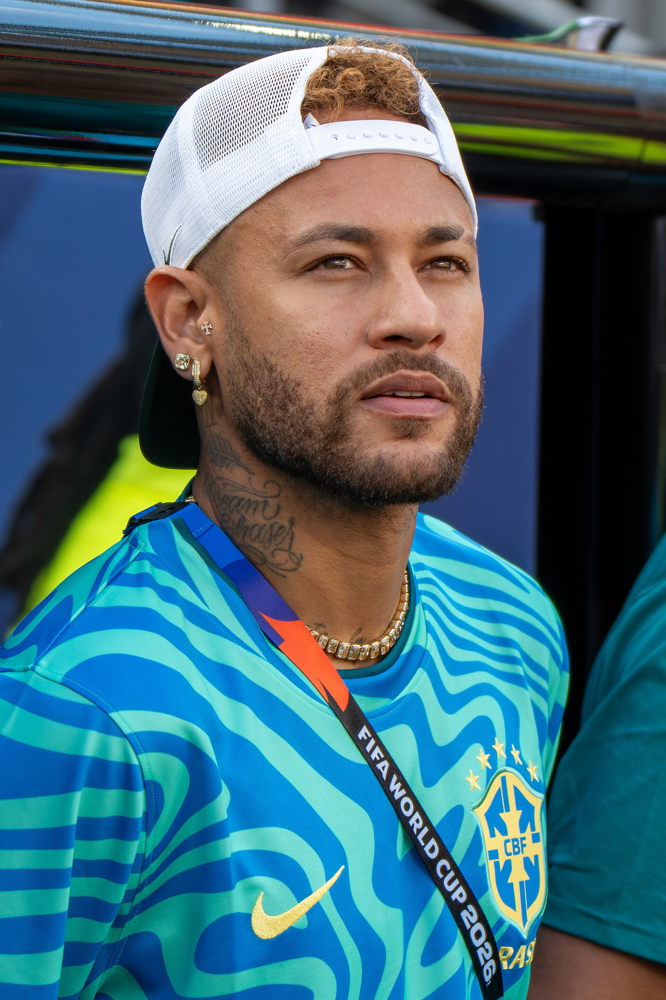
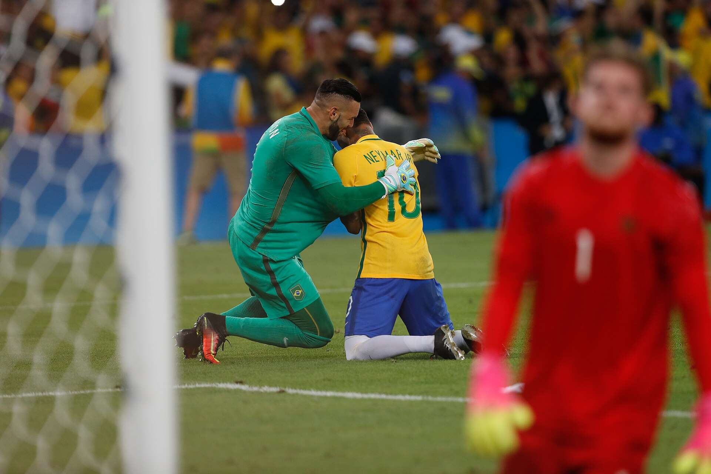
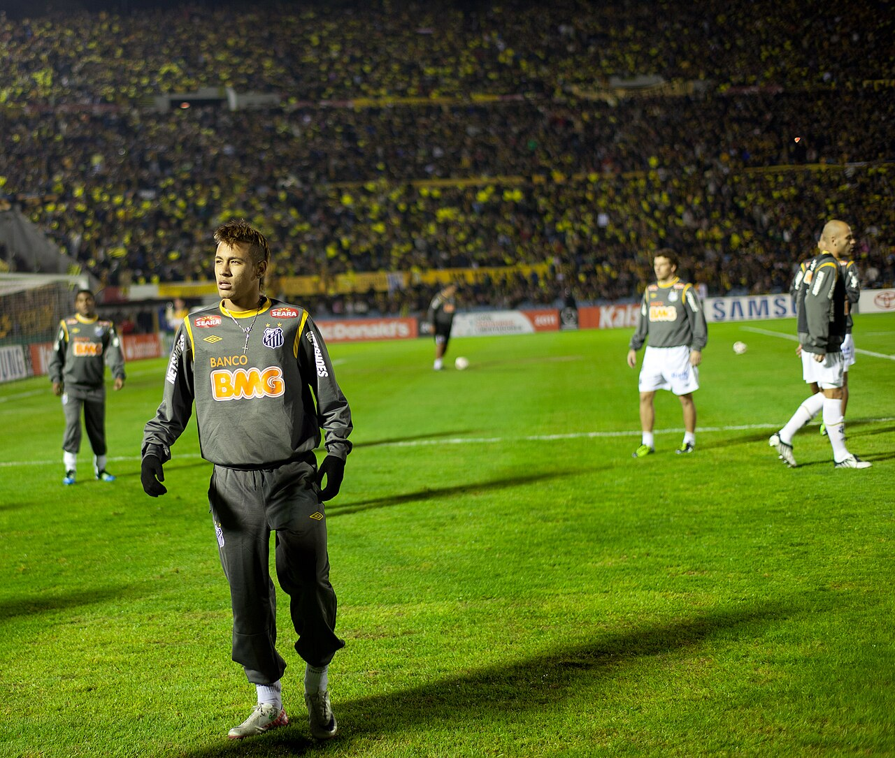
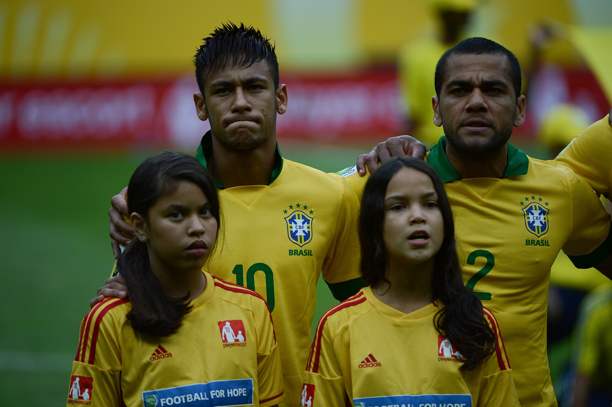
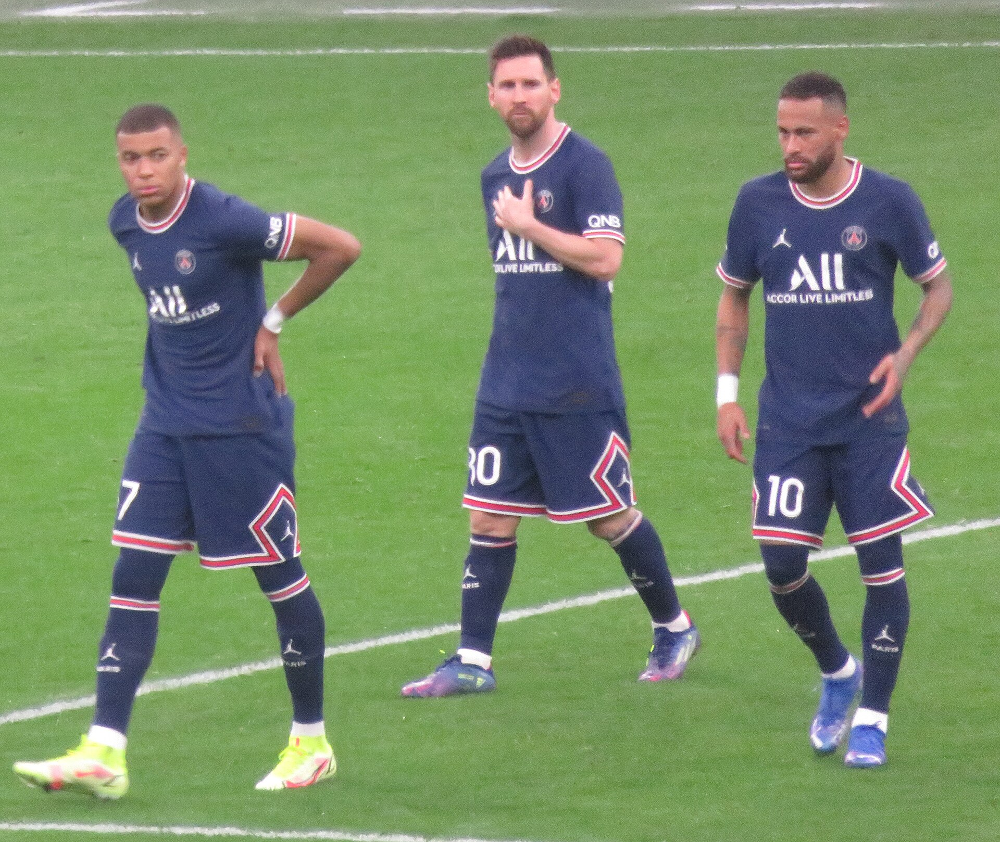
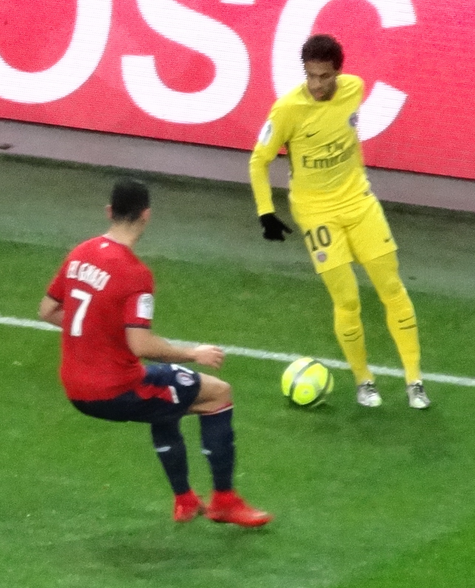
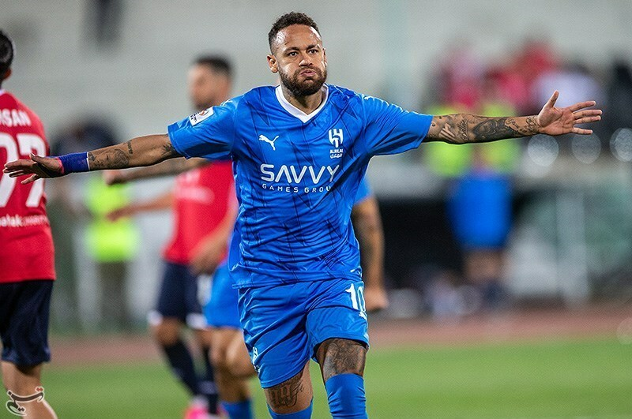
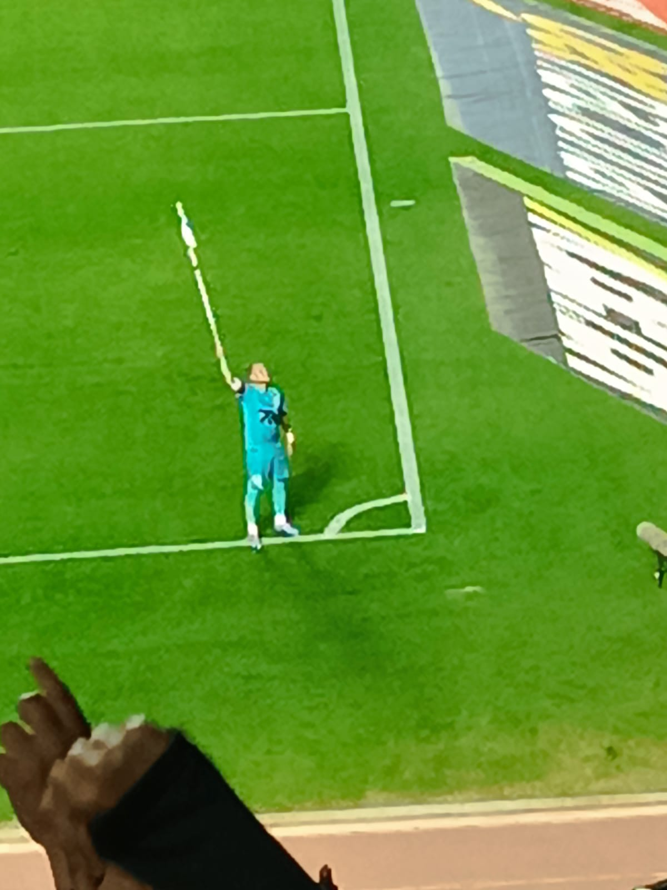

Nº 01/04 — SANTOS, 2011
Ousadia
O DIBLE QUE VIROU SOBRENOME

MOGI DAS CRUZES, SP — 05.02.1992
ATACANTE · CAMISA 10 · DESTRO
NEY MARjúnior
Duas décadas de dribles, gols impossíveis e polêmicas na medida exata. A história do Menino da Vila, costurada como um uniforme de alta-costura.
ROLE PARA EXPLORAR ↓ (clique no dez)
01 — MANIFESTO
A ARTE DE JOGAR CRIANÇA
DIANTE DE 80 MIL PESSOAS
DIANTE DE 80 MIL PESSOAS
Há jogadores que ganham jogos, outros que ganham títulos. E há os que fazem o estádio inteiro prender a respiração cada vez que a bola chega. Neymar joga como quem brinca — e cobra caro por isso. O futebol, coitado, nunca mais foi o mesmo.
02 — NÚMEROS
A conta
A conta
não mente.
0
GOLS PELA SELEÇÃO
MAIOR ARTILHEIRO DA HISTÓRIA
0
GOLS OFICIAIS NA CARREIRA
CLUBES E SELEÇÃO
0
A TRANSFERÊNCIA RECORDE
PARIS, AGOSTO DE 2017
0
TÍTULOS OFICIAIS
DE MOGI A RIADE
03 — TRAJETÓRIA
Cinco capítulos,
Cinco capítulos,
uma camisa.
A ORIGEM
2009—2013
Santos FC
Aos 17 anos, um garoto de Mogi devolveu o Santos ao topo da América. Libertadores de 2011, dribles em série e um bilhete só de ida para a Europa.
230JOGOS
138GOLS
0,60MÉDIA
04 — RECORTES
ARQUIVO VISUAL · 2011 → 2025
PASSE O MOUSE PARA REVELAR A COR
PASSE O MOUSE PARA REVELAR A COR







05 — HONRAS
Sala de
Sala de
troféus.
79 GOLS
Maior artilheiro
da Seleção BRASIL — 2010 →
da Seleção BRASIL — 2010 →
2011Copa LibertadoresSANTOS FC
2013Copa das ConfederaçõesSELEÇÃO
2015Champions LeagueFC BARCELONA
2015Mundial de ClubesFC BARCELONA
2016Ouro OlímpicoRIO 2016 — MARACANÃ
×2La LigaBARCELONA 14–16
×5Ligue 1PARIS SG 18–23
×3Campeonato PaulistaSANTOS 10–12
06 — SISTEMA
Um armário
Um armário
campeão.
Poucas peças, corte impecável. A paleta vem da Vila, a tipografia vem da arquibancada — clique em uma cor para copiar.
DISPLAY
Ousadia
FRAUNCES — OPZS 144
MANCHETES & NÚMEROS
MANCHETES & NÚMEROS
TEXTO
Vila Belmiro nº10
SPACE GROTESK
INTERFACE & CORPO
INTERFACE & CORPO
DADOS
05.02.1992 — 79'
IBM PLEX MONO
ETIQUETAS & PLACARES
ETIQUETAS & PLACARES
COMPONENTES
12 COLUNASGUTTER 24BASE 8RAIO 999HAIRLINE 1PX @ 14%OURO SOBRE PRETO, SEMPRE
07 — PÔSTERES
DE UMA CARREIRA
Série Vila.
QUATRO IMPRESSÕESDE UMA CARREIRA
Nº 02/04 — RIO, 2016
Alegria
O PÊNALTI DO OURO OLÍMPICO
Nº 03/04 — A CAMISA
10
A MAIS PESADA DO PAÍS
Nº 04/04 — CARTÃO DE EMBARQUE
MOGI DAS CRUZES → VILA BELMIRO 2009
VILA BELMIRO → BARCELONA 2013
BARCELONA → PARIS 2017
PARIS → RIADE 2023
RIADE → VILA BELMIRO 2025
RETORNO CONFIRMADO
O futebol sério perde todo dia para o futebol feliz.
— BILHETE DE ARQUIBANCADA · VILA BELMIRO